Ce que c'est vraiment
Une boucle d'environ trois cent cinquante kilomètres au départ de la ville de Ha Giang, dans la province du même nom, à l'extrême nord du Vietnam. Elle longe la frontière chinoise et traverse un plateau calcaire classé géoparc mondial par l'Unesco.
Ce n'est pas une randonnée à moto pour débutants. La route monte, descend, s'accroche à flanc de falaise et se referme sur des lacets sans parapet. Le col de Ma Pi Leng, qui domine la rivière Nho Que de plusieurs centaines de mètres, en est le morceau le plus impressionnant et le plus photographié.
C'est aussi la région la plus pauvre et la plus montagneuse du pays, peuplée majoritairement de minorités ethniques. On dort chez l'habitant, on mange ce qui est servi, et le confort n'est pas le sujet.

Ce qui reste, une fois rentré. L'ambiance avec les autres backpackers, d'abord. On part avec des inconnus et on finit la boucle ensemble.
Les chauffeurs, ensuite. Les nôtres faisaient la fête avec nous le soir, ce à quoi je ne m'attendais pas du tout. Ce ne sont pas des guides distants, ils font partie du groupe.
Et les paysages, évidemment, mais sur toute la longueur. Ce n'est pas un ou deux points de vue, c'est permanent.
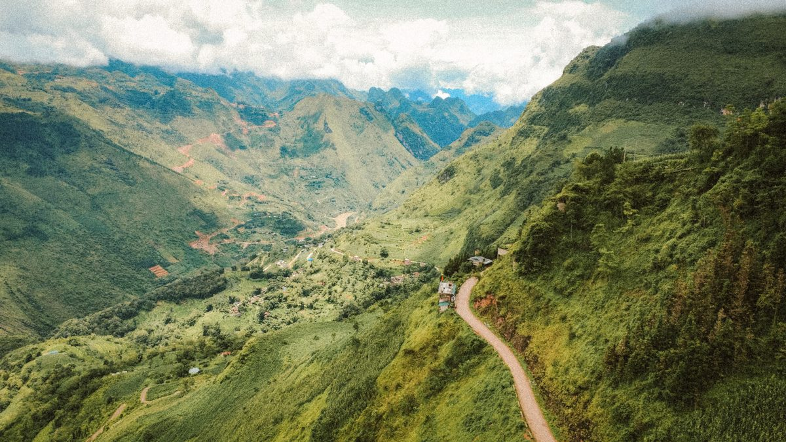
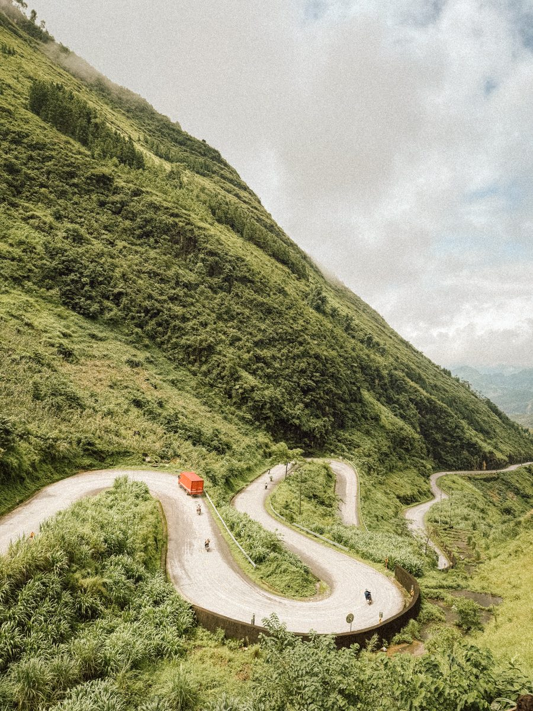
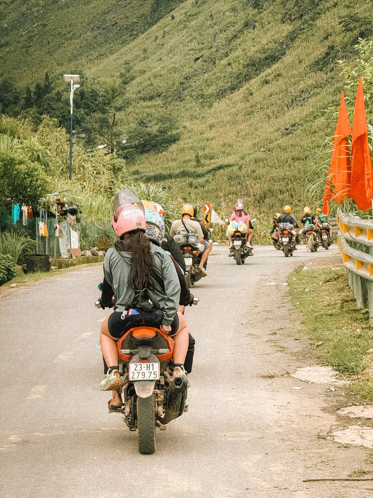
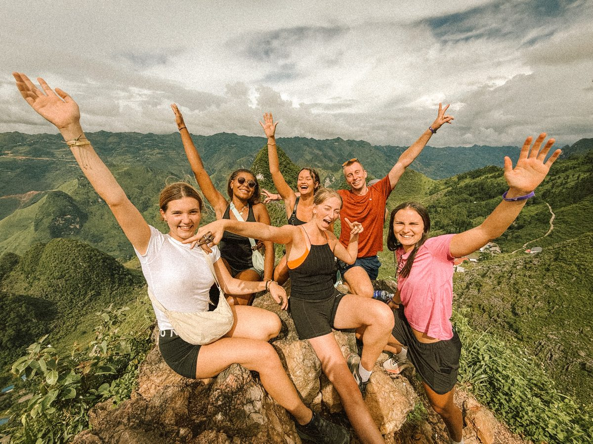
Quand partir
De septembre à novembre, c'est la meilleure fenêtre. Les pluies d'été sont passées, l'air est sec, et les rizières en terrasses virent au doré avant la récolte. C'est aussi la saison des fleurs de sarrasin sur le plateau.
Mars et avril arrivent juste derrière. Il fait doux, il pleut peu, les pêchers et les pruniers sont en fleurs, et il y a nettement moins de monde sur la route.
Juillet et août sont la pire période. C'est le cœur de la mousson, la chaussée devient glissante, la visibilité tombe et les glissements de terrain coupent régulièrement des portions de route.
De décembre à février, il fait réellement froid en altitude. Le paysage est souvent noyé dans la brume, et les homestays ne sont pas chauffés.
Nous, c'était en juillet. Ce n'est pas la saison idéale, on est en pleine saison des pluies. On a eu de la chance, il n'a pas beaucoup plu et tout s'est bien passé.
Je le précise parce que la chance ne se planifie pas : si tu as le choix de tes dates, ne prends pas juillet comme référence.
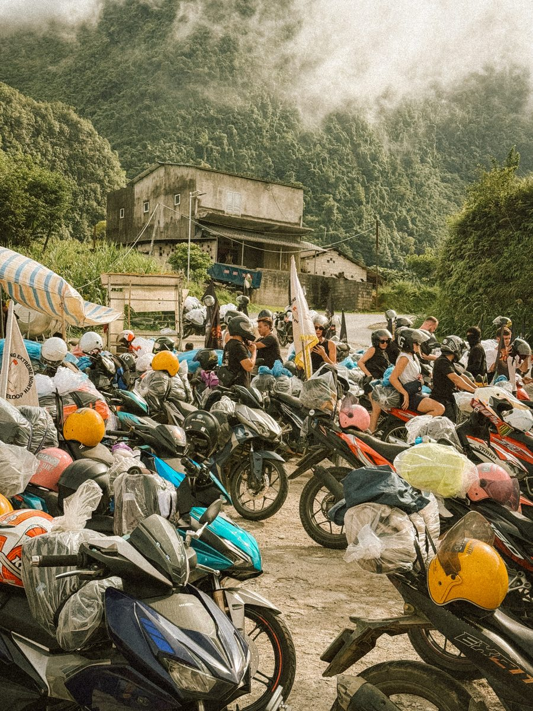
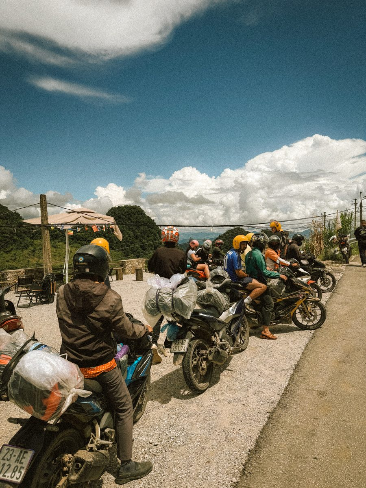
Y aller depuis Hanoi
La ville de Ha Giang est à environ trois cents kilomètres au nord de Hanoi, soit six à sept heures de route. Il n'y a ni aéroport, ni train.
La solution la plus courante est le bus de nuit couchette. Départ de Hanoi en fin de soirée, arrivée à Ha Giang au petit matin, ce qui permet de partir sur la boucle dans la foulée sans perdre une journée. Les places à l'étage et à l'avant sont les moins secouées.
Il existe aussi des minibus dits limousine, plus chers, plus rapides et bien plus confortables, mais qui roulent de jour et te coûtent donc une journée.
La plupart des agences qui organisent la boucle vendent le transport depuis Hanoi dans le même forfait. C'est souvent plus simple, rarement plus cher.

Conduire ou monter derrière
C'est la seule décision vraiment importante du voyage, et elle se prend avant de partir.
Monter derrière un pilote local. C'est ce qu'on appelle un easy rider : tu es passager, un conducteur de la région pilote, et tu regardes le paysage au lieu de regarder la route. C'est devenu l'option majoritaire chez les voyageurs étrangers, et de loin la plus sûre si tu n'as pas des milliers de kilomètres de moto derrière toi.
Conduire toi même. Possible, mais avec une condition qu'on passe souvent sous silence. Le Vietnam ne reconnaît que les permis internationaux délivrés au titre de la convention de Vienne de 1968, et il te faut la catégorie moto. Sans ce document, tu roules sans permis valable aux yeux de la loi vietnamienne. L'amende va de deux à quatre millions de dongs, soit soixante quinze à cent cinquante euros environ, et surtout ton assurance voyage ne te couvre pas en cas d'accident.
Ce dernier point est le vrai sujet. Les routes de Ha Giang ne pardonnent pas, les chutes sont fréquentes, et une évacuation sanitaire depuis le nord du Vietnam se compte en dizaines de milliers d'euros. Vérifie ce que dit ton contrat sur la conduite de deux roues avant de louer quoi que ce soit.
Il existe une position intermédiaire : conduire soi même dans un groupe encadré par un guide. Tu gardes le guidon, quelqu'un connaît la route, et le groupe s'arrête aux bons endroits. La question du permis, elle, reste entière.
Vérifier ce que couvre son assurance
Ce qu'on a fait. Quatre jours et trois nuits, avec l'agence Jasmine, et des chauffeurs. Personne dans le groupe n'a tenu un guidon.
Je recommande les deux : Jasmine, et le fait de ne pas conduire. Sur ces routes, être passager change tout : tu regardes le paysage au lieu de surveiller le virage suivant, et tu ne joues pas avec ton assurance. Le pilote connaît la route par cœur, il sait où s'arrêter et à quelle heure passer les cols. Rien de tout ça ne s'improvise en trois jours.
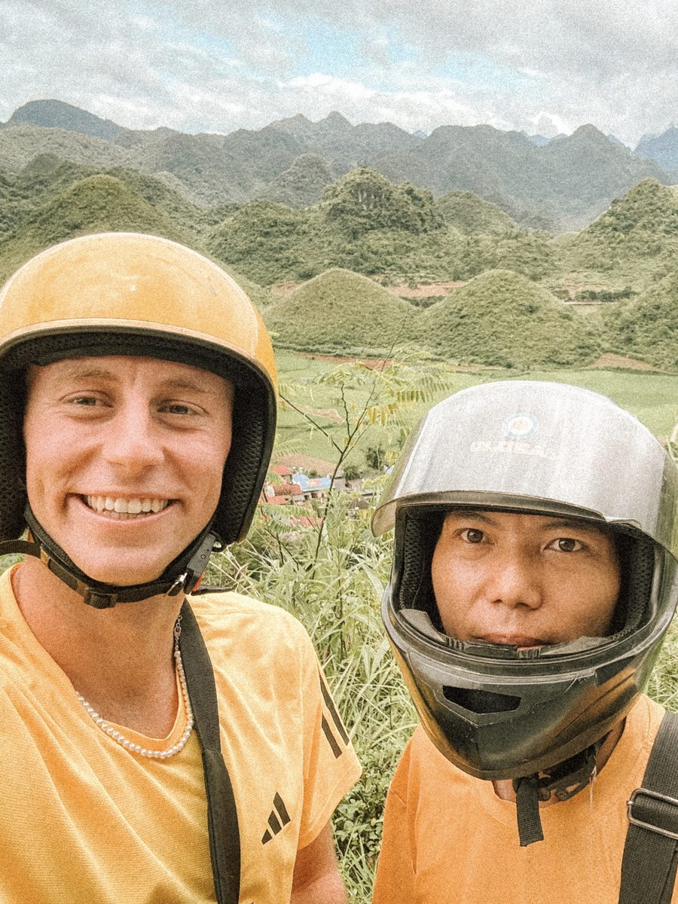
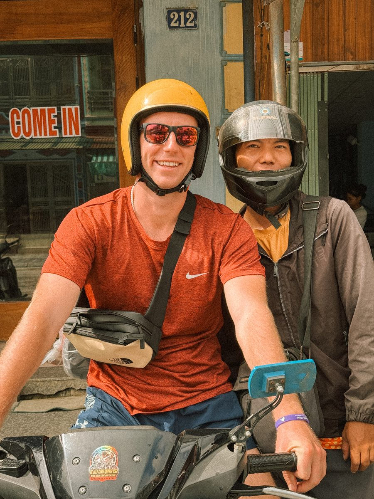
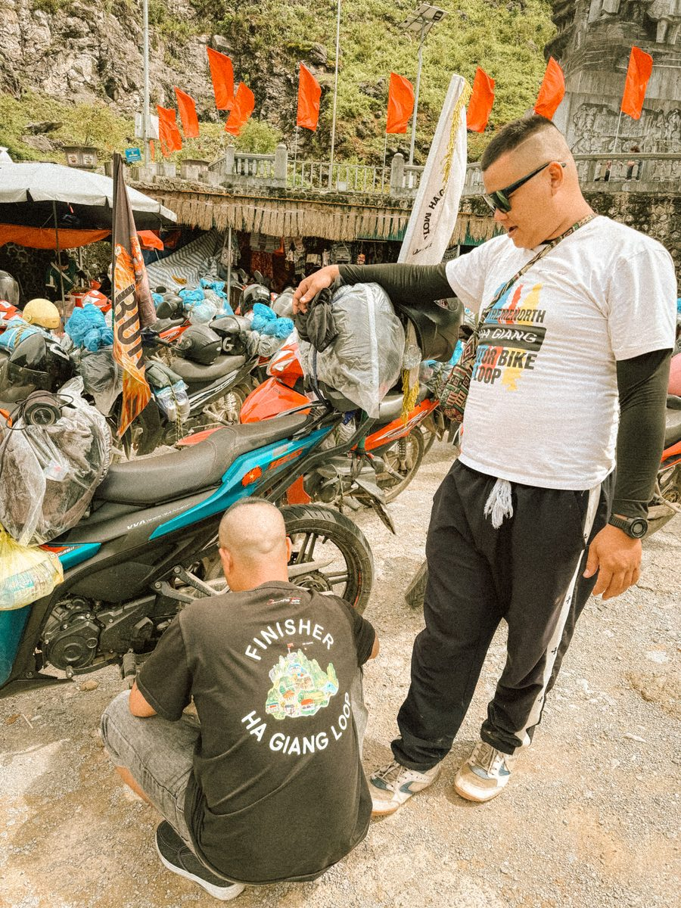
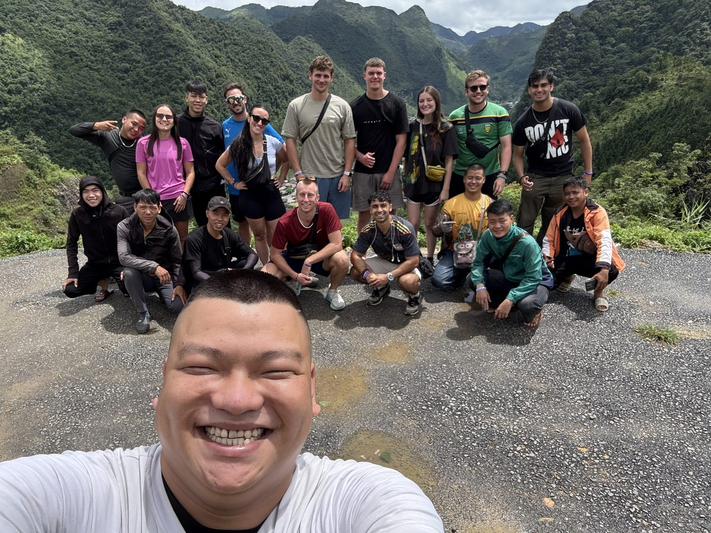
Le permis de zone frontalière
C'est la nouveauté à connaître, et beaucoup de guides en ligne ne sont pas encore à jour.
Depuis juin 2026, les autorités de la province appliquent réellement l'obligation, pour les voyageurs étrangers, de détenir un permis de zone frontalière. La boucle longe la Chine, et les districts qu'elle traverse sont classés zone sensible.
Le permis couvre les districts de Quan Ba, Yen Minh, Dong Van, Meo Vac et Du Gia, ainsi que la tour du drapeau de Lung Cu, tout près de la frontière. Autrement dit, la quasi totalité de l'itinéraire.
Il coûte entre deux cent mille et deux cent cinquante mille dongs, soit huit à dix euros. Il s'obtient au bureau de l'immigration de la ville de Ha Giang, idéalement la veille du départ. La plupart des agences le prennent en charge et l'incluent dans leur forfait : c'est la solution la plus simple, et il vaut mieux vérifier ce point avant de réserver.
Garde ton passeport sur toi pendant toute la boucle. Les contrôles de police existent, et se présenter sans permis expose à une amende et à un demi tour.
L'itinéraire, jour par jour
La boucle classique se fait dans le sens des aiguilles d'une montre. Trois jours suffisent si tu ne comptes pas t'arrêter longtemps, quatre est le bon rythme, cinq permet les détours vers Du Gia ou Lung Cu.
On l'a faite en quatre jours et trois nuits, et c'est le découpage que je détaille ci dessous.
- Ha Giang à Yen MinhLa porte du ciel de Quan Ba et les premiers cols
- Yen Minh à Dong VanLe plateau calcaire, le palais des Vuong, la vieille ville
- Dong Van à Meo VacLe col de Ma Pi Leng et la rivière Nho Que
- Retour vers Ha GiangPar Du Gia, ou plus direct par Mau Due
Premier jour, jusqu'à Yen Minh
On quitte la ville de Ha Giang et la route grimpe tout de suite. Premier arrêt à la porte du ciel de Quan Ba, qui domine deux collines rondes que tout le monde photographie.
La suite est une succession de cols et de villages accrochés à la pente. C'est la journée la plus douce des quatre, une bonne mise en jambes si tu conduis toi même.
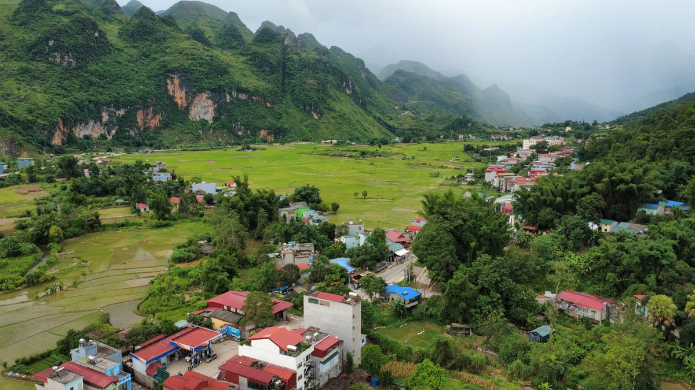
Deuxième jour, jusqu'à Dong Van
Le paysage change complètement. On entre sur le plateau calcaire, un chaos de pitons gris où la terre cultivable se compte en mètres carrés entre les rochers.
Sur la route, le palais du roi Hmong à Sa Phin, une bâtisse en pierre et en bois construite au début du vingtième siècle. Détour possible vers la tour du drapeau de Lung Cu, le point le plus au nord du pays, à quelques centaines de mètres de la Chine.
Dong Van et sa vieille ville marquent l'étape. Le marché du dimanche matin, s'il tombe pendant ton passage, vaut la peine de caler le programme autour.
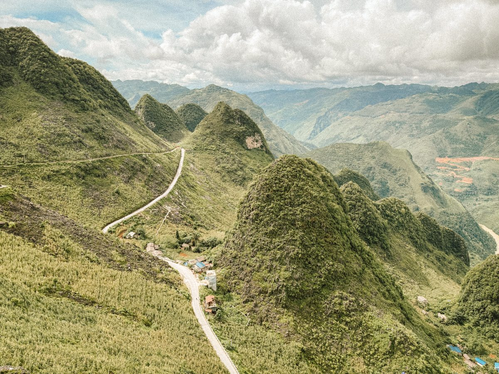
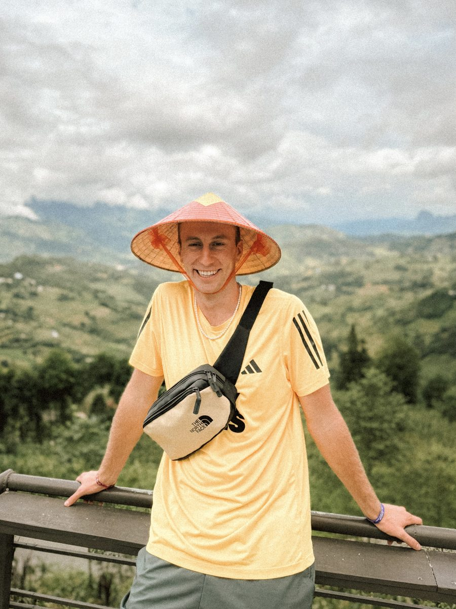
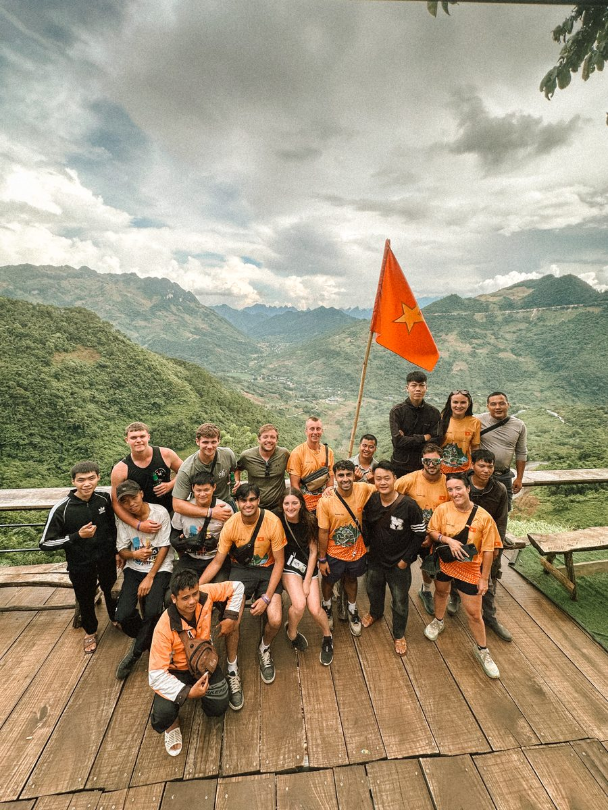
Troisième jour, le col de Ma Pi Leng
C'est le morceau que tout le monde attend. Vingt kilomètres de route taillée à flanc de falaise entre Dong Van et Meo Vac, avec la rivière Nho Que qui coule huit cents mètres plus bas dans un canyon vert.
En bas, un bateau remonte la rivière pendant une heure environ. Il faut descendre jusqu'à l'embarcadère par une piste raide, et c'est une des rares activités payantes de la boucle qui vaut vraiment son prix.
Meo Vac est une petite ville sans charme particulier, qui sert d'étape. Son marché du dimanche est en revanche l'un des plus vivants de la région.
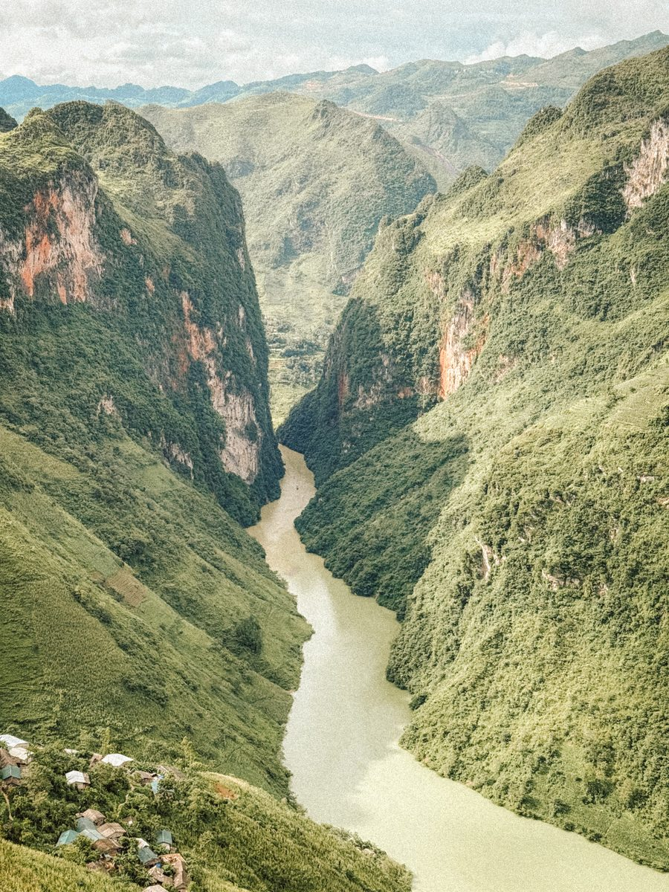
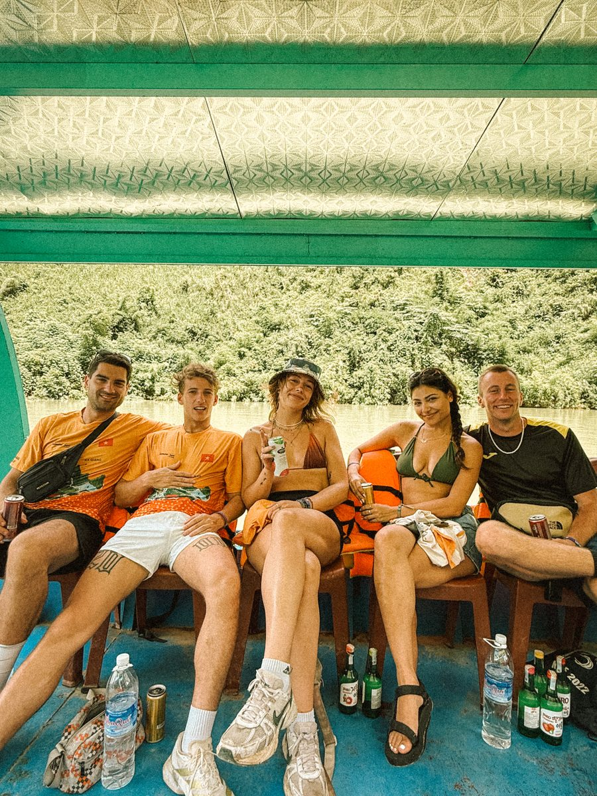
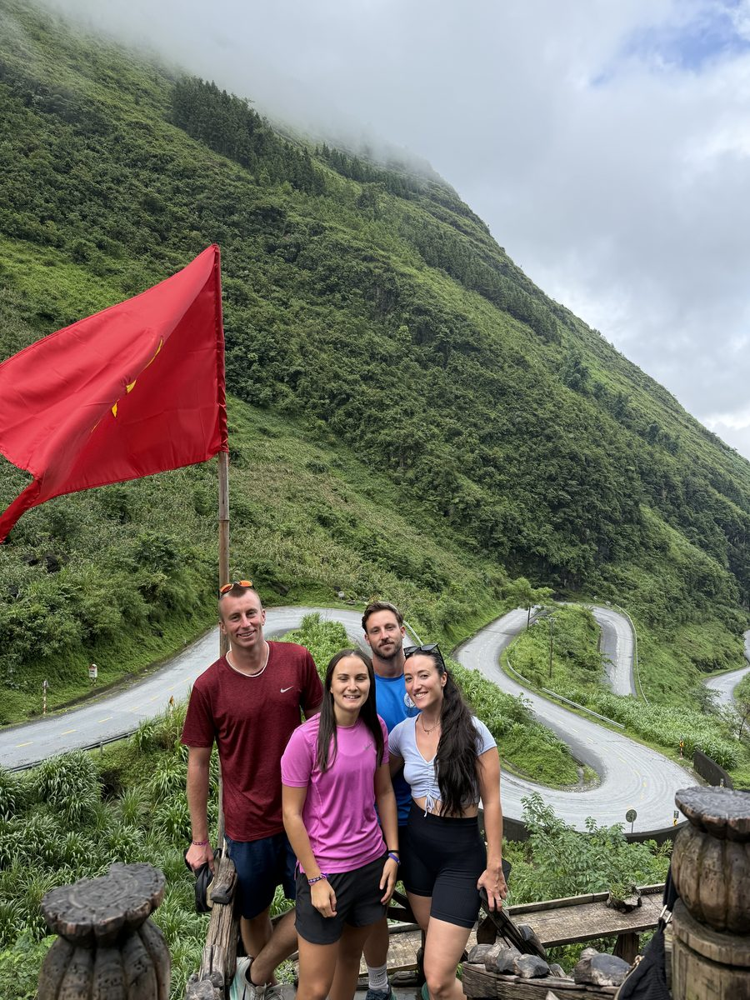
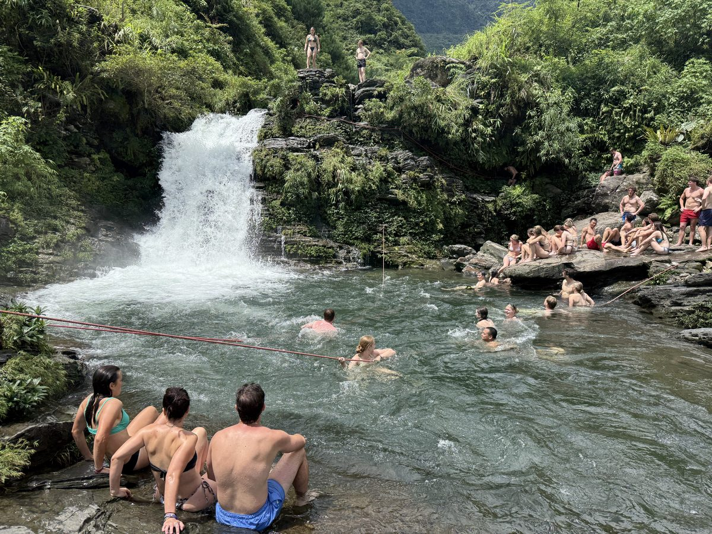
Le retour
Deux options. Le retour direct par Mau Due, plus court, qui permet de reprendre un bus le soir même. Ou le crochet par Du Gia, une vallée plus verte avec une cascade et une baignade, qui ajoute une nuit et beaucoup au voyage.

Je serais incapable de te citer les villages où on a dormi. Et c'est exactement ce que je te recommande de faire.
Quand tu pars avec des chauffeurs, tu ne te soucies pas de l'itinéraire. Tu ne regardes pas la carte, tu ne cherches pas la prochaine étape, tu ne réserves rien. C'est tout l'intérêt de la formule, et c'est ce qui rend ces trois jours reposants malgré la route.
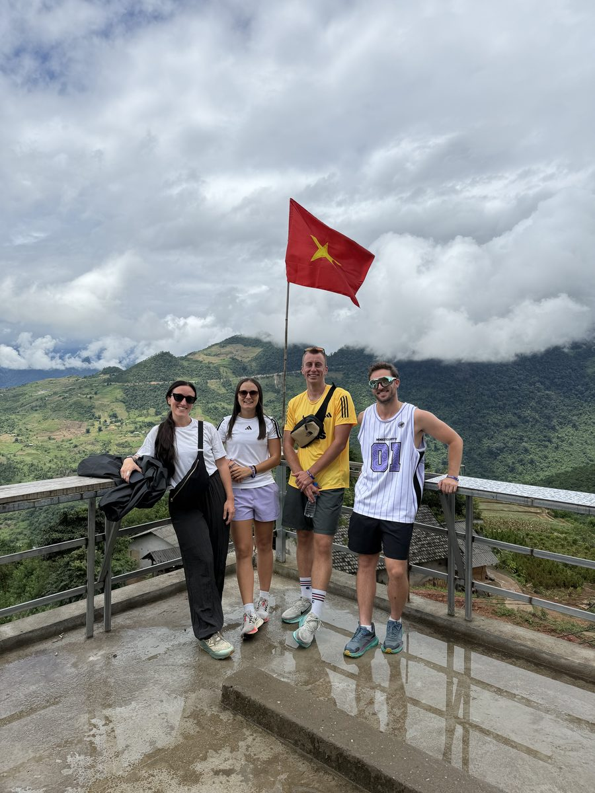

Le budget
La boucle se réserve presque toujours en forfait, ce qui simplifie le calcul.
Compter environ cent cinquante à deux cents euros par personne pour trois jours en easy rider, transport depuis Hanoi souvent compris. Le forfait inclut en général le pilote, l'essence, les nuits en homestay, les repas et l'entrée des sites.
En conduisant toi même, la location d'un semi automatique tourne autour de dix à quinze euros par jour, plus l'essence. Tu économises le pilote, tu payes tes nuits et tes repas à la carte, et tu prends le risque décrit plus haut.
À prévoir en plus dans tous les cas : le permis de zone frontalière, le bateau sur la Nho Que, les boissons et les pourboires. Retire du liquide à Ha Giang avant de partir, les distributeurs se raréfient dès qu'on monte.
300 € chez Jasmine, tout compris. Il n'y a rien à ajouter en cours de route.
Une option existe pour avoir une chambre privée moyennant un supplément. Sans elle, tu dors en dortoir ou en chambre partagée, ce qui fait aussi partie de l'expérience.
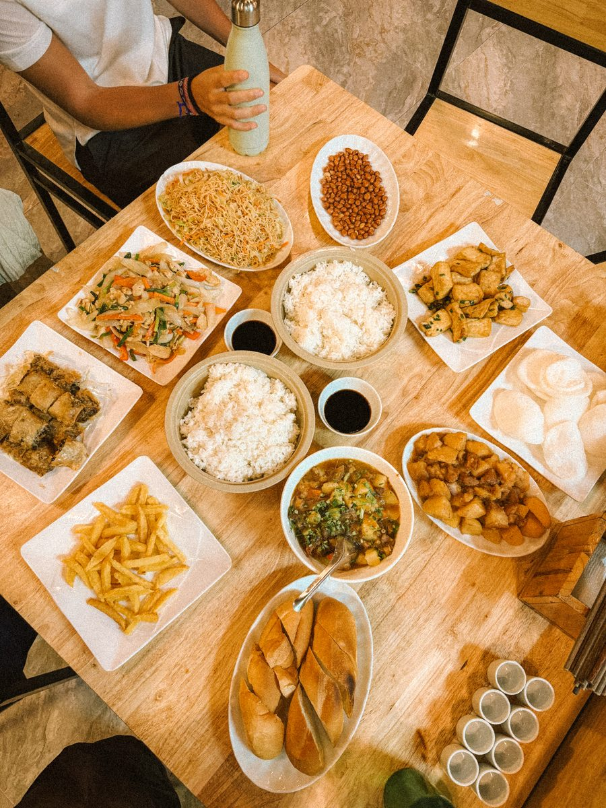
Où dormir
Le homestay est la norme sur toute la boucle, et ce n'est pas un choix par défaut : c'est une bonne partie de l'intérêt du voyage.
Concrètement, une maison de famille avec un dortoir de matelas au sol sous moustiquaire, des sanitaires communs, un repas pris tous ensemble à la même table et souvent du bonheur local servi en fin de soirée. Le confort est sommaire, l'accueil ne l'est pas.
Si tu passes par une agence, les hébergements sont déjà réservés et tu n'as rien à faire. En autonomie, on trouve à se loger le jour même dans chaque étape, sauf en haute saison et le week end.
Prends des bouchons d'oreille. Un dortoir de quinze personnes après une journée de moto, c'est bruyant.
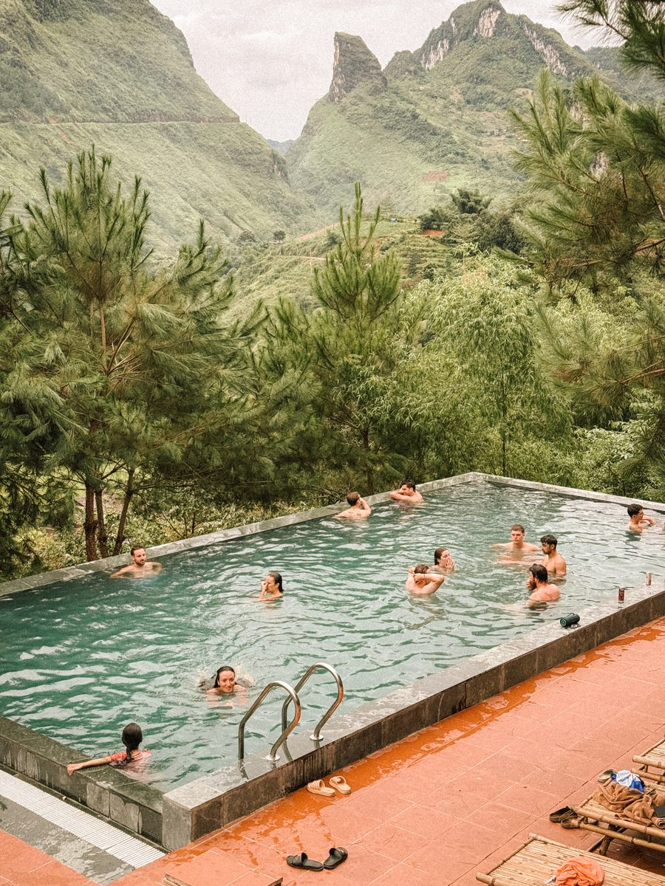
Ce qu'il faut emporter
De quoi avoir chaud. Il fait dix à quinze degrés de moins en altitude qu'à Hanoi, et le vent sur la moto fait le reste. Une polaire et un coupe vent, même en été.
De quoi rester sec. Une averse arrive vite. Un poncho suffit, les agences en prêtent souvent, mais protège ton sac séparément.
Un petit sac seulement. Le gros bagage reste à l'hôtel de Ha Giang ou de Hanoi. Sur la moto, tu emportes deux jours d'affaires, pas plus.
Du liquide. Petites coupures, pour les cafés, les péages de sites et les pourboires.
Tes papiers. Passeport et permis de zone frontalière sur toi, pas au fond du sac.
Deux choses que je remettrais dans le sac sans hésiter. Des écouteurs filaires, et une tenue de sport pour être confortable sur la moto pendant des heures.
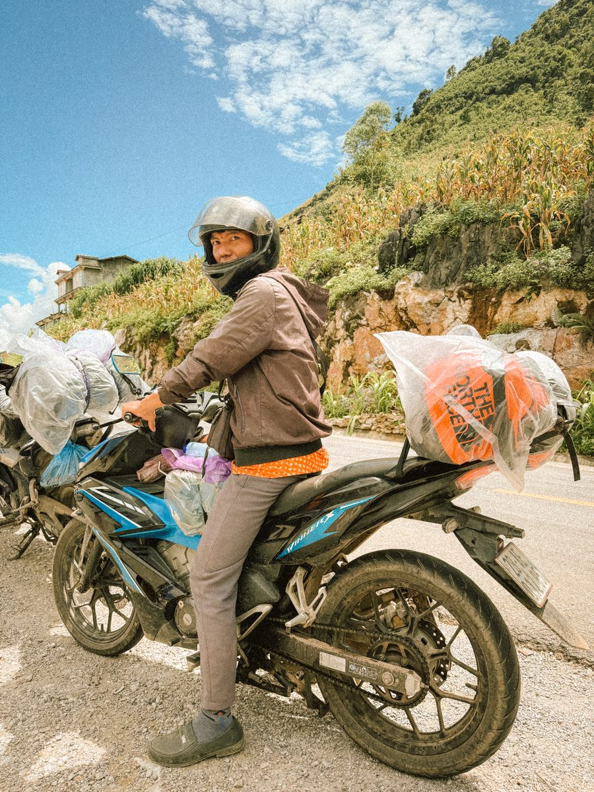
Les erreurs à éviter
Partir en deux jours. Ça se fait, mais on passe la boucle à rouler sans jamais s'arrêter, et on rate exactement ce pour quoi on est venu.
Conduire sans permis international moto en pensant que ça ne se verra pas. Le problème n'est pas l'amende, c'est l'assurance qui saute au moment où tu en as besoin.
Réserver sans vérifier si le permis de zone frontalière est compris. C'est récent, toutes les agences ne l'ont pas encore intégré à leur forfait.
Venir en juillet ou en août. La région est magnifique, mais la mousson y transforme la route en patinoire et coupe régulièrement des portions entières.
Sous estimer le froid. C'est l'erreur la plus fréquente chez ceux qui arrivent d'un mois en Asie du Sud Est en tongs et en t shirt.
Rien de raté et rien payé en trop, parce que tout était compris dans le forfait. C'est le principal avantage de passer par une agence sur cette boucle.
Le vrai point à connaître sur Jasmine, et c'est le seul défaut que je lui trouve : c'est une agence orientée jeune et festive, avec des groupes nombreux. Si tu cherches quelque chose de plus calme, d'autres agences font la boucle avec moins de participants et probablement moins de soirées. Il y en a pour tous les goûts.
Mais si tu viens pour rencontrer des gens, alors c'est celle que je recommande le plus.
Tu veux qu'on construise ton voyage ensemble ?
Ce guide te donne la trame. Si tu veux aller plus loin, je monte ton itinéraire avec toi : le tracé étape par étape, les hébergements, les trajets entre les villes et les activités qui valent vraiment la journée.
On part de tes dates, de ton budget et de ce que tu as envie de vivre. Tu repars avec un programme prêt à suivre, en sachant ce qu'il faut réserver en avance et ce qui peut attendre d'être sur place.
Trois formules, à partir de 59 € pour un avis sur ton plan, 249 € pour l'itinéraire complet. Premier échange gratuit, et sans engagement.
Les liens et le matériel cités
Les plateformes de réservation, eSIM, banques et assurances que j'utilise en voyage sont réunies sur une seule page, avec mes codes de parrainage.
Page vérifiée et mise à jour le .